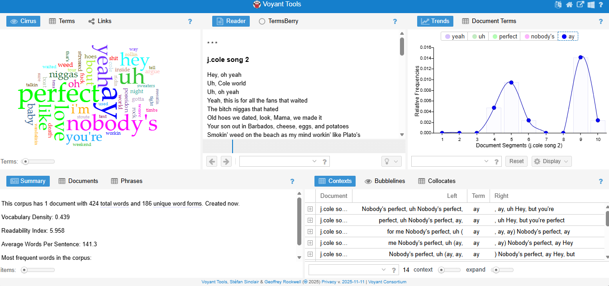

Nobody Perfect ( Sideline story Album)
J. Cole’s The Sideline Story uses language centered on reflection, ambition, and personal growth, which is clear from the album’s most frequent n-grams. Phrases like “real life,” “back then,” and “I remember when” show how often Cole looks back on his past, grounding the album in storytelling and self-reflection. Recurring terms such as “my dream,” “dream big,” “trying to make,” and “on my way” highlight the album’s focus on ambition and the long journey toward success. References to “my mama” and “came from nothing” emphasize both family influence and the struggles that shaped him, revealing how his upbringing drives his motivation. Together, these patterns show that the album is built around themes of identity, perseverance, and the desire to rise while honoring where he came from.

J. Cole and Dreamville’s D-Day: A Gangsta Grillz Mixtape uses language that highlights competitiveness, confidence, and collective energy, which is clear from its most frequent n-grams. Phrases like “real n****,” “big stepper,” and “don’t play” establish an assertive, dominant tone, showing the artists positioning themselves as powerful and unchallenged. Repeated expressions such as “came up quick,” “ain’t no way,” and “earned my spot” point to a focus on rapid success and proving worth, reinforcing the project’s aggressive, victory-driven attitude. Team-focused terms like “my gang,” “the squad,” and “my brothers” emphasize unity within Dreamville, framing the mixtape as a collective show of strength. Overall, these language patterns reveal a project driven by swagger, teamwork, and the energy of artists asserting their status and momentum.
The Comparison
After looking at The Sideline Story and D-Day: A Gangsta Grillz Mixtape, the overall comparison highlights the range and versatility in J. Cole’s lyrical style and thematic focus. The Sideline Story centers on personal reflection, growth, and ambition, with frequent references to dreams, his past, and family, creating an emotionally grounded tone. The language emphasizes storytelling and the journey of coming up, showing Cole’s focus on identity and perseverance. D-Day, on the other hand, leans into high-energy, assertive, and competitive language, with repeated phrases about dominance, confidence, squad loyalty, and rapid success. It emphasizes collective strength and swagger, presenting a bold, hype-driven atmosphere that contrasts with the reflective tone of The Sideline Story. Together, these two albums show how Cole can balance vulnerability and ambition with confidence and assertiveness, moving fluidly between introspective storytelling and high-energy displays of status and team pride. The n-grams from both albums reveal not only the themes he prioritizes but also how his choice of language whether reflective and narrative or punchy and declarative shapes the listener’s experience of his journey, mindset, and artistry.